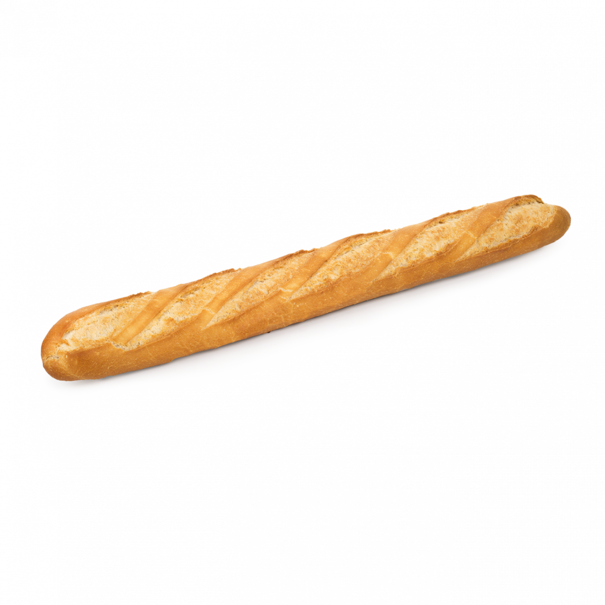
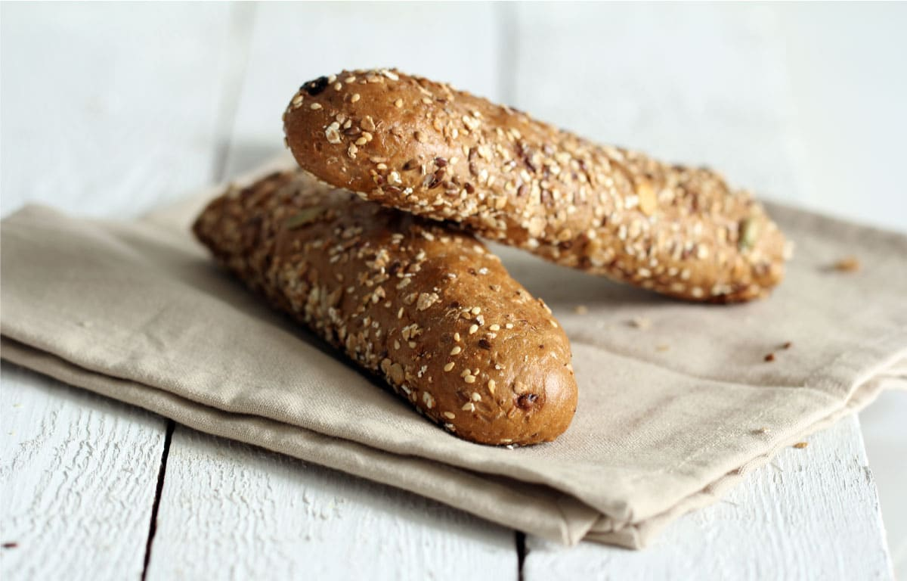
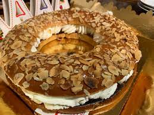
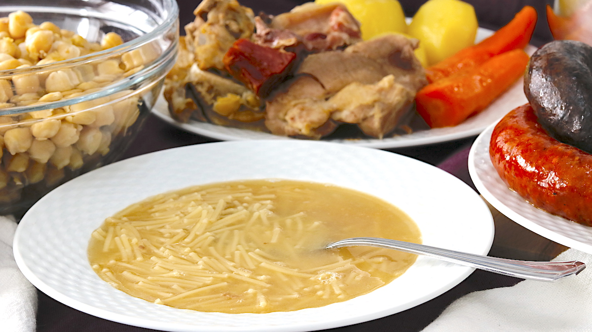
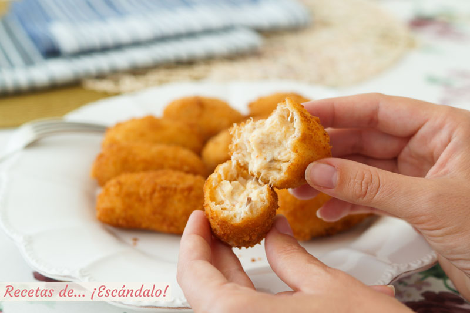

PANES
GASTRONOMÍA
Panes tiene una de los mejores gastronomías del mundo. Por supuesto destacan sus famosos panes de distintos tipos, pero tiene muchos más productos maravillosos.
Panes
| Panes | Descripción | Foto |
|---|---|---|
| Gallego | Pan sin ningún tipo de conexión con Galicia. Hecho de harina de trigo y centeno. Forma redonda |
 |
| NeoBaguette | Como la baghette fracesa,pero mejor. |
 |
| Pan con pipas | Hecho con harina de trigo. Su nombre explica bastante bien lo que es, es pan normal pero con pipas |
 |
Roscón de Reyes
El dulce más famosoy más querido en toda la isla se trata del roscón de reyes. En Panes se ha ido experimentando con la receta hasta conseguir la expresión perfecta de la masa. También se ha prescindido de las innecesarias frutas escarchadas. Se puede tomar con nata o con trufa.
Cocido
El cocido es una plato muy completo, perfecto para días frescos. Tiene una gran valor nutricional debido a su principal componente: el grabanzo. ¿Quién nos disfruta de una buena sopa y unos garbanzos después? Además aunque sobre se puede aprovechar y hacer uestro siguiente plato estrella:
Croquetas
Las croquetas de cocido mejor valoradas del planeta. Simplemente perfectas.
